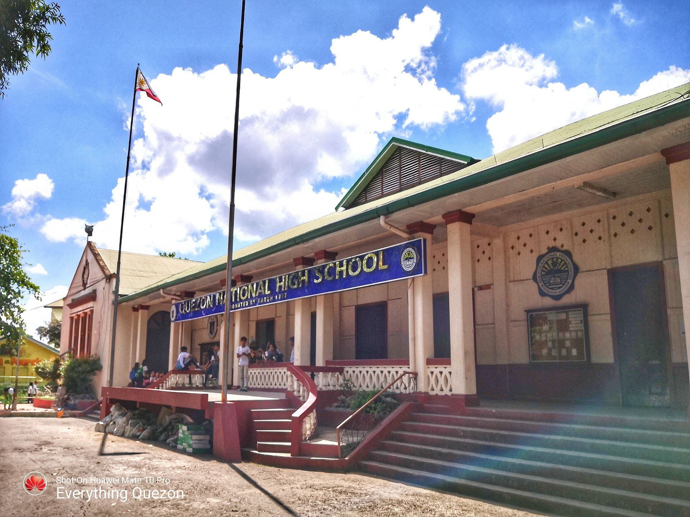
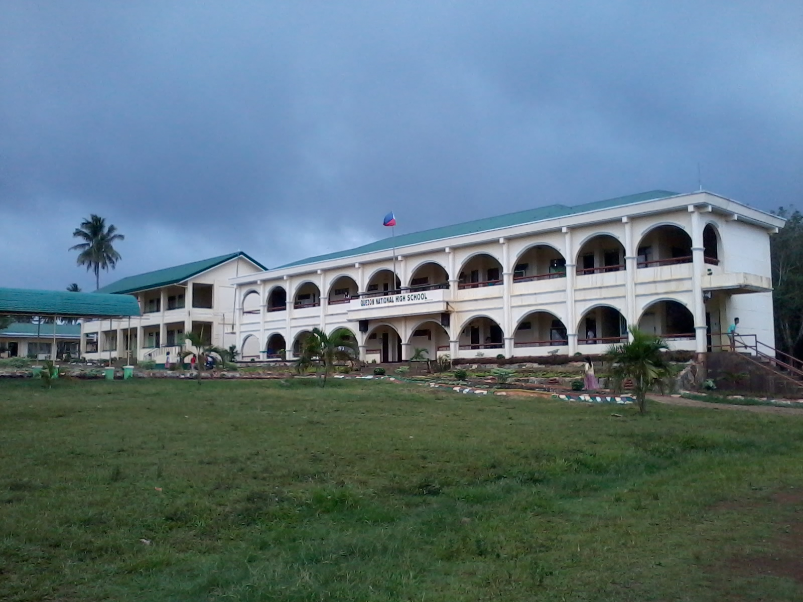
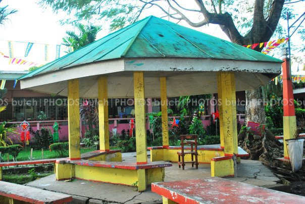

School Head : MR. WILLY Q. MAMARADLO
Brgy. Iyam, Lucena City, Quezon 4301
Quezon National High School (QNHS) is a public secondary high school located at Brgy. Ibabang Iyam, Lucena City, Philippines with almost 10,000 enrolees from grade seven to fourth year. Quezon National High School has maintained a reputation for being the premiere secondary school not only in Lucena City but in the whole province as well, as shown by its long list of alumni who have made names for themselves in the different professions they chose.


